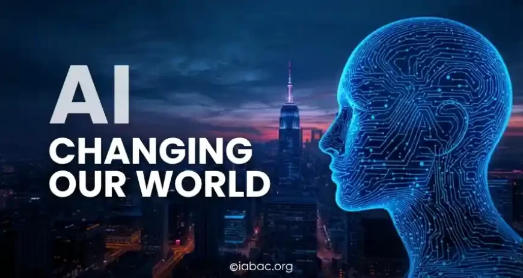
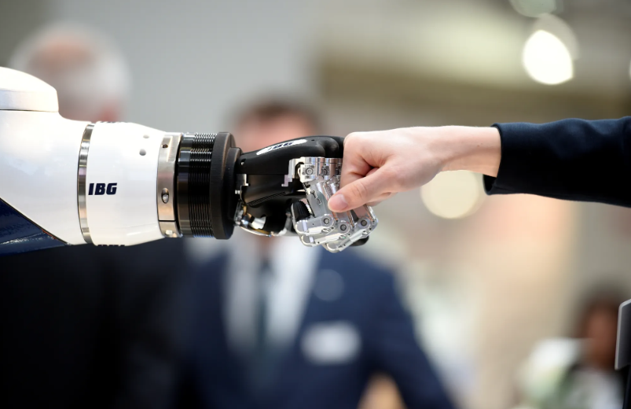

(New Era of Innovation and Transformation)

The Emerging Infrastructure: Energy and Sovereign AI
The year 2026 marks a significant structural pivot. AI has expanded beyond chips and cloud storage to become a core matter of national security and energy infrastructure.
The Power Grid:
Data Sovereignty:
The Challenges We Must Face
Every revolutionary technology brings severe societal growing pains. In his latest outlines on public safety, tech pioneer Bill Gates emphasized that the choices we make about AI right now are critical to ensure the good outweighs the bad.
Workforce Upheaval:
Human Biases:
Data Security & Intellectual Property:
Here are the deeper operational details, current developments, and specific metrics surrounding the next phase of the AI revolution:
| Strategic Focus | Core Operational Details and Objectives | Key Metrices and Targets |
|---|---|---|
| Sovereign AI Infrastructure | Nations are building localized data centers and native language models to protect data sovereignty and reduce reliance on foreign tech monopolies. | 15+ countries actively developing independent national AI strategies. |
| Energy & Grid Modernization | Massive computational demands require a transition toward dedicated small modular nuclear reactors (SMRs) and renewable microgrids to avoid overloading public power grids. | AI data center energy consumption is projected to grow by 160% by 2030. |
| Synthetic Training Data | Generative models are shifting from scraping the public internet to using artificially generated datasets, avoiding copyright litigation and overcoming the shortage of high-quality human data. | Expected to become the primary data source for AI training by 2027. |
| Workforce Upskilling | Corporations are deploying mandatory, continuous education platforms focusing on human-AI collaboration, creative problem-solving, and prompt engineering. | 60% of workers will require significant retraining over the next 3 years. |
